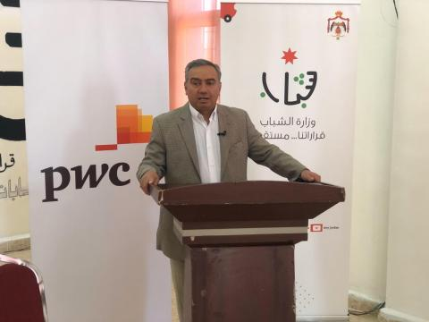

البريزات يرعى حفل إطلاق قاعة حاسوب في " شباب الشونة الشمالية"
السبت, تموز25, 2020
البريزات: الوزارة تعمل بتناغم وانسجام مع كافة المؤسسات والوزارات
البريزات: دورنا في الوزارة دور تمكيني لتعزيز نهج "التشغيل الذاتي" للشباب
رعى وزير الشباب الدكتور فارس البريزات اليوم السبت، حفل إطلاق واستحداث قاعة حاسوب، في مركز
شابات الشونة الشمالية، بالتعاون مع شركة برايس ووترهاوس كوبرز، بحضور عدد من أبناء المحافظة
وممثلين عن المجتمع المحلي.
وأكد البريزات على أهمية إدخال التكنولوجيا الرقمية في جميع المراكز الشبابية، نظراً للدور
الكبير الذي تلعبه في تنمية وصقل مواهب الشباب وتزويدهم بالمهارات العلمية والعملية، من خلال
جملة من البرامج والأنشطة التفاعلية التي تعمل الوزارة على تزويدها للشباب.
وأشار البريزات أن الوزارة تعمل بتناغم وانسجام كامل مع كافة المؤسسات والوزارات في الدولة بما
يسهم في تحقيق أهداف ومحاور الاستراتيجية الوطنية للشباب 2019-2025، وتنفيذ محاورها على أرض
الواقع مع الشركاء، مشيداً بالمبادرة التي اطلقتها الوزارة بالتعاون مع شركة برايس ووترهاوس
كوبرز، ومثمناً الشراكة الاستراتيجة مع الشركة ودعمها المستمر، في دعم الشباب في كافة المراكز
الشبابية التابعة للوزارة.
ولفت البريزات إلى أن تجربة الوزارة في المجال الرقمي تجربة ناجحة بكافة المقاييس، من خلال
البرامج والدورات والأنشطة والمبادرات، التي نفذتها مؤخراً والتي من أبرزها معسكرات الحسين
للعمل والبناء الرقمية 2020، والملتقى الوطني للرياديين الشباب، من خلال وسائل الاتصال المرئي.
وكشف البريزات أن الوزارة ستعمل مع وزارة الاقتصاد الرقمي والريادة ووزارة الزراعة لإطلاق
العديد من المبادرات منها الريادة في الزراعة، لتمكين الشباب من خلال الدورات التدريبية
المتخصصة من إنشاء مشاريعهم الخاصة
من جانبه قال مدير شركة شركة برايس ووترهاوس كوبرز، ميشيل اورفلي إن هذه المبادرة جاءت بالشراكة
مع وزارة الشباب إيماناً بالدور الفاعل للشباب في المجتمع، ومشيراً إلى أن الهدف من هذه
المبادرة هو إنشاء مختبرات حاسوب في مجموعة من المراكز الشبايية في مختلف محافظات المملكة.
وأضاف إن أهم جزئية في هذه الشراكة التي تجمعنا مع وزارة الشباب هي قيام المتطوعين من شركتنا
بمجموعة من المحاضرات للشباب في العديد من المجالات، منها تطوير المهارات الرقمية، مهارة البحث
عن العمل، المهارات الكتابية، مهارات الاتصال، وغيرها من المهارات الحياتية التي تُسهم في تعزيز
ثقة الشباب بأنفسهم، وتعزيز إمكانات الحصول على فرص العمل.
يذكر أن المشروع التكنولوجي الذي ينفذ بالتشارك بين وزارة الشباب وشركة برايس ووترهاوس كوبرز،
يستهدف إستحداث قاعات حواسيب مجهزة بأجهزة لاب توب وكافة المستلزمات والأدوات في 6 مراكز شبابية
بواقع مركزين في كل إقليم، بهدف تطوير وتفعيل دور المراكز الشبابية في المجال التكنولوجي.